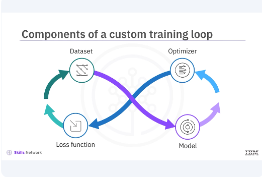
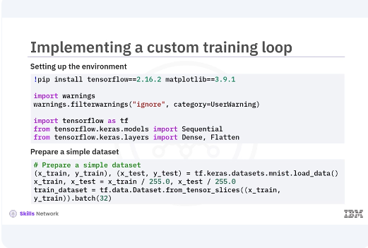
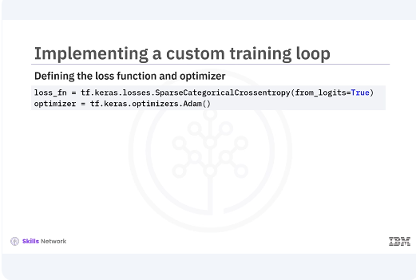
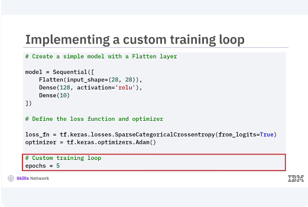
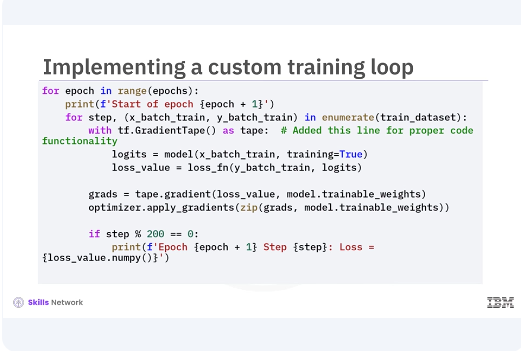
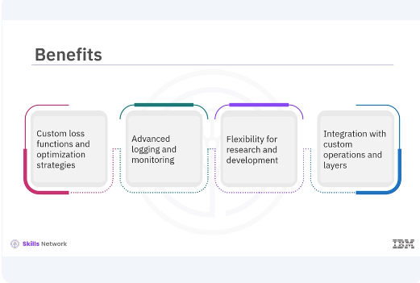
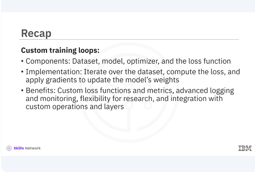

Custom Training Loops in Keras
Welcome to this video on custom training loops in Keras. After watching this video, you'll be able to describe a basic structure of a custom training loop, explain the benefits of a custom training loop, implement a custom training loop.

Let's begin by exploring the basic structure of a custom training loop. It involves several key components. The dataset, the model, the optimizer, and the loss function. Let's break down each component.

Here's a code example of setting up the environment. First, set up your environment by importing the necessary libraries and preparing your dataset. Next, prepare a simple dataset. In this example, you import TensorFlow and Keras modules, load the MNIST dataset, normalize the data, and then create a TensorFlow dataset, and batch it for training.


Now let's look at how to define the loss function and optimizer. The loss function measures how well the model's predictions match the true labels. The optimizer updates the model's weights to minimize the loss. Now let's implement the custom training loop. You will iterate over the dataset, compute the loss, and apply gradients to update the model's weights. First, create a simple model with a flatten layer. Next, define the loss function and optimizer. Finally, implement the custom training loop. In this loop, you iterate over the training dataset for a specified number of epochs.

For each batch, compute the logits by passing the inputs through the model. You can then calculate the loss using the specified loss function. To compute gradients and update model weights, we use tf.GradientTape. TF.GradientTape is a TensorFlow API that records operations for automatic differentiation, which is a technique used to compute the gradients required to optimize a model during training. By using tf.GradientTape, you can watch the forward pass through the network, which allows TensorFlow to record all operations on the watched variables. These recorded operations are then used to compute the gradients of the loss with respect to each weight in the network. Using these gradients, the optimizer updates the model weights to minimize the loss. This technique allows for fine control over each training step, making it possible to implement complex training procedures and custom algorithms.

Custom training loops include several benefits. They provide more granular control over the training process, allowing for the implementation of custom loss functions and optimization strategies. They also enable advanced logging and monitoring, which can be crucial for research and development. Custom training loops also offer integration with custom operations and layers.

In this video, you learned that a custom training loop consists of a dataset, model, optimizer, and the loss function. To implement the custom training loop, you iterate over the dataset, compute the loss, and apply gradients to update the model's weights. Some of the benefits of custom training loops include custom loss functions and metrics, advanced logging and monitoring, flexibility for research, and integration with custom operations and layers.